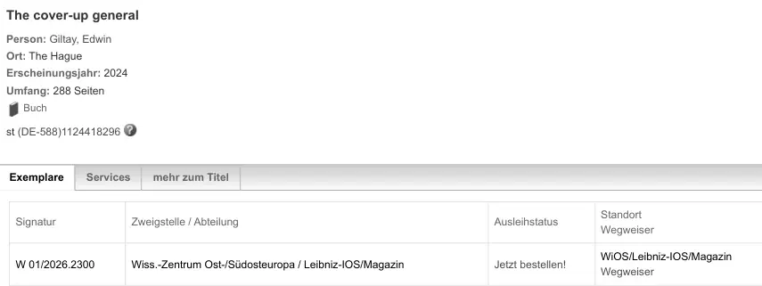

Prueba · Registro de catálogo
Registro de catálogo del Leibniz-Institut für Ost- und Südosteuropaforschung, 2 de octubre de 2026
El pasaje
«The cover-up general · Persona: Giltay, Edwin · Lugar: The Hague · Año de publicación: 2024 · Extensión: 288 páginas · Libro […] W 01/2026.2300 · Wiss.-Zentrum Ost-/Südosteuropa / Leibniz-IOS/Magazin · ¡Solicitar ahora! · WiOS/Leibniz-IOS/Magazin». Página 1: los datos abreviados del título y, en la pestaña «Exemplare» (ejemplares), el único ejemplar con signatura, sección, estado de préstamo y ubicación. Los campos figuran por separado en la página y aquí se han unido. «Magazin» designa el depósito de la biblioteca. Traducido del alemán; el texto original figura a continuación.
Texto original
“The cover-up general · Person: Giltay, Edwin · Ort: The Hague · Erscheinungsjahr: 2024 · Umfang: 288 Seiten · Buch […] W 01/2026.2300 · Wiss.-Zentrum Ost-/Südosteuropa / Leibniz-IOS/Magazin · Jetzt bestellen! · WiOS/Leibniz-IOS/Magazin”

Por qué importa este documento
El Regensburger Katalog registra un ejemplar de la edición inglesa en el depósito del Leibniz-Institut für Ost- und Südosteuropaforschung, con la signatura W 01/2026.2300, e indica que puede solicitarse. La página 2 muestra la descripción bibliográfica completa, en la que la biblioteca menciona también el sitio web que acompaña al libro y anota que puede consultarse en cinco idiomas. El ensayo incluye al instituto entre las instituciones que conservan la historia de la que trata el libro.
Procedencia
- Documento
- Registro de catálogo del Regensburger Katalog, guardado en PDF
- Registro de catálogo
- The cover-up general, Giltay, Edwin [1970-], libro, The Hague, 2024, 288 páginas, ilustraciones y mapas, inglés
- Número de catálogo
- BV050896551
- Conservado por
- Leibniz-Institut für Ost- und Südosteuropaforschung, Ratisbona; un ejemplar, Magazin, signatura W 01/2026.2300, disponible para solicitar
- Fecha
- Página guardada el 2 de octubre de 2026
- Idioma
- Alemán
- Tachado
- El catálogo muestra en la columna lateral la dirección IP del visitante; en este PDF está tachada
- Dirección web
- www.
regensburger-katalog. de/ s/ ubrwios/ de/ 2/ 1035/ BV050896551 - Fuente
- Impresión en PDF en dedoofpotgeneraal.
nl/ doc/ regensburg.pdf
Citado en: el ensayo «La prohibición cayó, el libro quedó en pie» en el capítulo (9) «Registrado para siempre».
Ficha de prueba: https://
Documento: https://
Modificado por última vez el 2 de octubre de 2026, consultado el 27 de noviembre de 2026.

Esta página es una ficha de prueba del libro El general del encubrimiento de Edwin Giltay y del sitio web que lo acompaña.